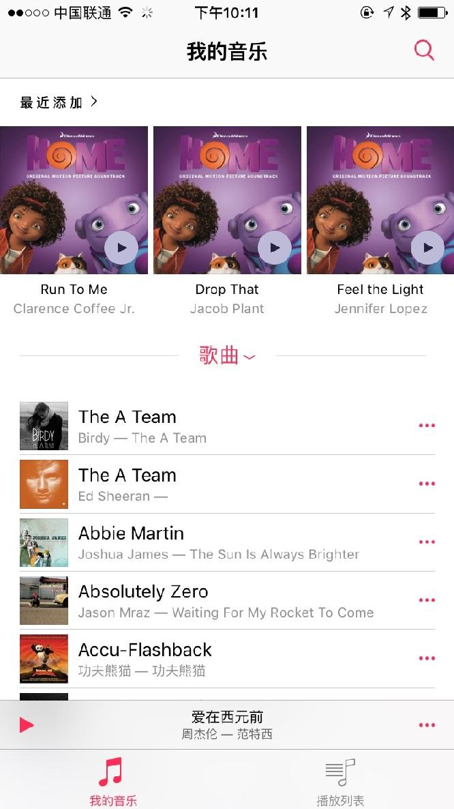
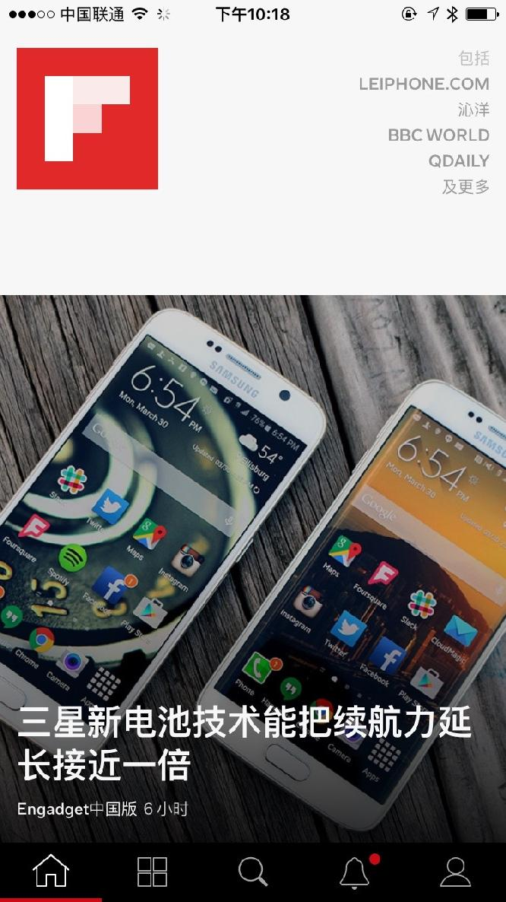
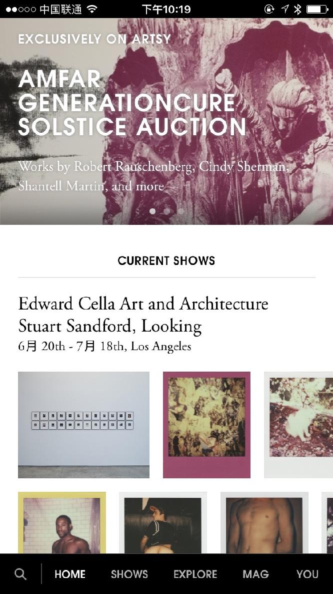

基础界面 - TabBar
Product Design: 基础界面 - TabBar
结束了感觉的培养，我们现在开始了解一些基本的 UI 界面和其交互方式。
TabBar 是 iOS 上最经典的基础界面，导航结构都进行了扁平（Flat）化处理，用户可以在主界面底部通过不同的功能 Tab 来高效的选择他们需要的功能。
TabBar 的经典模式
微信，Telegram 以及 iOS 自带的音乐 App 都采用了这种方式，多个 Tab 在底部对功能进行了分割，使用不同的 icon 表示不同的功能，为了提高可读性，在 icon 下面用文字标注了这个 icon 的含义。

微信
Telegram

音乐
音乐
自定义 TabBar
虽然很多 App 都采用了这种样式去展现 App，但是新瓶装旧酒，也有很多 App 把这种形式做出了新意。

Flipboard

Artsy
Artsy
Instagram 和 Flipboard 都隐去了 icon 下的文字，通过不同的风格给 TabBar 加上了自己的品牌烙印。 而 Artsy 更是只留下文字，从另一个角度打入了品牌烙印。
到底是采用传统的 TabBar 让用户专注于功能，还是通过风格化加强 App 的品牌感，提供独特的体验，这两者值得根据 App 的功能和特质好好思考一下。